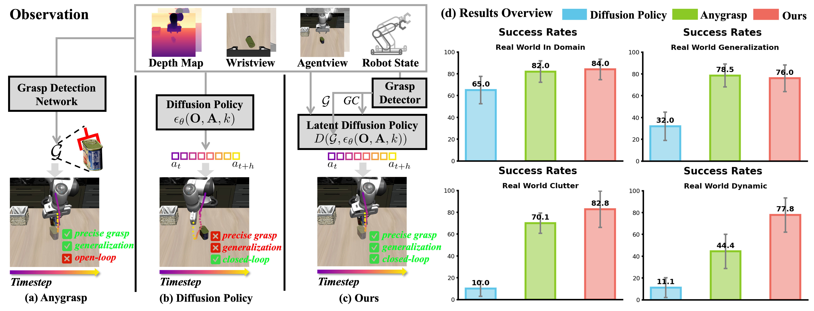
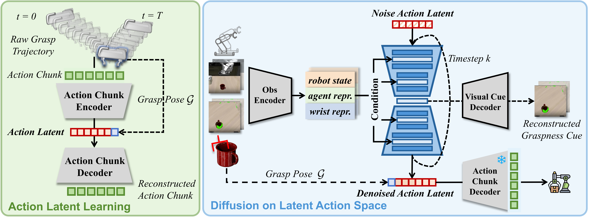

GraspLDP: Towards Generalizable Grasping Policy via Latent Diffusion
Abstract
This paper focuses on enhancing the grasping precision and generalization of manipulation policies learned via imitation learning. Diffusion-based policy learning methods have recently become the mainstream approach for robotic manipulation tasks. As grasping is a critical subtask in manipulation, the ability of imitation-learned policies to execute precise and generalizable grasps merits particular attention. Existing imitation learning techniques for grasping often suffer from imprecise grasp executions, limited spatial generalization, and poor object generalization. To address these challenges, we incorporate grasp prior knowledge into the diffusion policy framework. In particular, we employ a latent diffusion policy to guide action chunk decoding with grasp pose prior, ensuring that generated motion trajectories adhere closely to feasible grasp configurations. Furthermore, we introduce a self-supervised reconstruction objective during diffusion to embed the graspness prior: at each reverse diffusion step, we reconstruct wrist-camera images back-projected the graspness from the intermediate representations. Both simulation and real robot experiments demonstrate that our approach significantly outperforms baseline methods and exhibits strong dynamic grasping capabilities.
Motivation

We introduce GraspLDP, a generalizable grasping policy integrated with the prior from grasp detector via latent diffusion. Specifically, prior works generally (a) predict the grasp pose (e.g. Anygrasp) or (b) generate action sequence (e.g. Diffusion Policy) for grasping. In contrast, (c) our method extracts grasp priors from a pre-trained grasp detector for action refinement in latent space, and (d) achieves substantial advantages over previous works in diverse grasping tasks.
Method Overview

Framework of proposed GraspLDP. In Action Latent Learning stage action chunks are refined under the guidance of a grasp pose in latent space encoded by a VAE. In Diffusion on Latent Action Space stage the graspness cue is used to condition the diffusion model’s denoising process and to reconstruct for enhancement.
Results Visualization

Qualitative experimental analysis. (a) Grasping trials using objects ”mug”, ”mustard bottle”, and ”thera med” in simulator. (b) Real world grasping trials corresponding to in domain, object generation, and visual generation performance. In particular, we use colored LED strips in low-light conditions to simulate visual interference.
Real World Demos
Poster
BibTeX
@article{xiang2026graspldp,
title={GraspLDP: Towards Generalizable Grasping Policy via Latent Diffusion},
author={Enda Xiang, Haoxiang Ma, Xinzhu Ma, Zicheng Liu, and Di Huang},
journal={arXiv preprint arXiv:2602.22862},
year={2026}
}